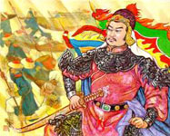

|
|
Đệ Nhị Tổ
|
Thiền-Sư BỒ ÐỀ ÐẠT MA
Sư-Trưởng TRƯƠNG-THANH-ÐĂNG
|
 |
Vua QUANG-TRUNG Nguyễn Huệ
(Người
anh-hùng dất TÂY-SƠN, Bình-Định, Việt-Nam)
|
Với những
tổn thất lớn lao do ý đồ "giết sạch, phá sạch, xóa
sạch " của các Vua triều Nguyễn; tất cả những gì
gọi là của Ngụy triều Tây Sơn đều bị thủ tiêu
hoặc phá hủy .
Cho nên những gì còn
lại để chúng ta tìm hiểu về người anh hùng đất
Tây Sơn thật ít ỏi, chỉ qua một số tài liệu, một
số truyền thuyết và ngay chính qua con người , cuộc
đời và những chiến công "long trời lỡ đất" của
vị tướng tài ba trăm trận trăm thắng quét sạch
bọn giặc ngoại xâm Mãn Thanh, thống nhất đất
nước.
Riêng việc tìm hiểu
những đóng góp tích cực của Ông trên lỉnh vực võ thuật
cổ truyền Việt Nam, một phương diện khá chuyên biệt,
có nhiều khó khăn và hạn chế nhất định . Những ý
kiến dưới đây chỉ là sơ bộ những gì chúng tôi đã
ghi nhận được, mong sẽ nhận được những
đóng góp và tìm hiểu sâu rộng và chính xác hơn của các bạn
đọc sau nầy .
A. Nguyễn Huệ, người anh hùng áo
vải, với chí lớn bao trùm thiên hạ.
Ba anh em
ở vùng đất Tây Sơn là Nguyễn Nhạc, Nguyễn Lữ và
Nguyễn Huệ, vốn người làng Thái Lão, huyện Hưng Nguyên,
Trấn Nghệ An. Giữa thế kỷ 17, quân nhà Nguyễn có lần
vượt sông Gianh bắt dân vùng Nghệ An vào khai hoang ở Đàng
Trong.
Tổ tiên 4 đời anh em Nguyễn
Huệ là một trong những nạn nhân đó, qua mấy đời
đến Nguyễn phú Phúc gia đình đã khá giã, sung túc, ba anh em
đều được ăn học, hiểu biết hơn
người.
Quan đại thần Nội
hữu Trương văn Hạnh, vì chống lại quyền thần
Trương phúc Loan, dâng biểu hạch tội kẻ gian thần nên
bị hãm hại. Thầy Giáo Hiến, là bạn thân của quan Nội
Hữu, sợ bị vạ lây nên lánh vào Bình Định đã hơn 10
năm, lấy nghề gỏ đầu trẻ trong một thôn ấp bên
cạnh đất Tây Sơn làm vui .Õ Nhận thấy ba anh em nhà Tây sơn
tướng mạo đặc biệt, tính khí khác người, thông minh
học giỏị. Ông đem lòng yêu mến, hết lòng dạy dỗ
cả văn lẩn võ . Từ văn thư, kinh sách đến cả
binh pháp, binh thư, đồ trận và võ thuật cổ truyền các môn
đầy đủ những tinh hoa truyền thống cao quý, bất
khuất của dân tộc Việt Nam .
Trong
ba người chỉ có Nguyễn Huệ là hơn cả, tiếng nói sang
sảng tựa chuông, cặp mắt sáng tựa chớp, thông minh, nhanh
nhẹn, học chỉ một lần đã hiểu ngay .Thầy Giáo
Hiến vốn là người có nhiều tâm huyết đối với
vận mệnh quốc gia , dân tộc, tiếc mình gối mõi, chân chùn,
chỉ mong gắng sức vun bồi , un đúc cho 3 anh em Tây Sơn chí
cả vì dân giúp nước.
|
|
" Nghĩa kỳ
dựng tại Tây Sơn .
Tận trung cứu quốc rữa
hờn cho dân .
Sau nầy rực rở đai cân .
Phải
dùng Đức trị mười phân vẹn mười
Nhớ
câu thu phục lòng người . . . . . . . ". (1)
(1)
Lời Thầy Giáo Hiến khuyên Nguyễn Huệ trước lúc
khởi nghĩa. - Tây Sơn Tiềm long lục, Nguyễn bá Huân, 1978.
|
|
|
B. Ý chí thống nhất
đất nước cao cả
Trong chiếu lên ngôi,
Vua Quang Trung Nguyễn Huệ đã nêu rỏ
|
|
"... Họ tự gây
dựng bờ cỏi riêng mình, kỷ cương trời
đất một phen đổ nát không dựng lên
được, chưa có thời nào quá quắt như thời
nầy .Thêm nửa, những năm gần đây Nam Bắc
đánh nhau, dân sa vào chốn lầm than ... " |
|
|
Trong xã
hội nông nghiệp, không ai khác hơn những người nông dân cùng
khổ, qua các thãm họa nặng nề chồng chất lên đôi vai
gầy, đã chính là những người đứng lên phê phán cuộc
nội chiến bẩn thỉu, cốt nhục tương tàn. Nguyễn
Huệ, người lảnh tụ nông dân kiệt xuất, miột
kẻ áo vải không một tấc đất nhanh chóng trở thành
một vị anh hùng dân tộc thống nhất đất nước,
tập hợp sức mạnh cả nước đánh đuổi
giặc xâm lăng, giử yên bờ cỏi, xây dựng cuộc sống
ấm no cho muôn dân.
C. Một thiên tài quân sự chưa
nếm mùi thất bại
Quang Trung Nguyễn
Huệ đã là một con người trí lược cả trong quân
sự và chính trị:
Cách dùng người :
Khi dùng người, đặt việc ông đã
biết tiên liệu mọi việc một cách tài tình, nhạy bén. Nghiêm
chỉnh áp dụng quân lịnh, nhanh chóng ổn định trật
tự và dân tình:
|
|
"... Những
người Nam Hà nầy (quân Nguyễn Huệ) đã áp dụng án
lệnh thật nghiêm, mới thấy tố cáo chẳng cần xét
xử lôi thôi họ đã chém đầu bọn trộm
cướp hay tất cả kẻ nào bị tố cáo là trộm
cướp. Người người đều hài lòng sự
xử phạt như vậy và không khỏi thán phục sự liêm
khiết của quân Tây Sơn ...(3)
(3) Thư của Giáo
sỉ Le Roy (Nam Định) viết cho Blaudin ở Paris vào ngày 11/
07/ 1786. |
|
|
Lối hành binh vũ
bão.
Tuy xuất thân chỉ là kẻ
áo vải, ở nơi thôn dã, Nguyễn Huệ đã tỏ rõ tài năng
kiệt xuất của một vị tướng lỉnh bách chiến
bách thắng, chưa nếm lấy một lần thất bại qua
hơn 20 năm vào Nam ra Bắc. |
|
Mỗi thời đại, mỗi vị anh hùng có
một cách đánh sáng tạo khác nhau : |
|
Lý Thường Kiệt
với "Tiên phát chế nhân" chủ động tấn công
phủ đầu, đập tan mọi âm mưu của đối
phương từ trong trứng nước. |
|
|
Trần Hưng
Đạo dùng kế "Thanh Giả", lừa địch vào sâu
rồi phản công tiêu diệt . |
|
|
Lê Lợi dùng kế lâu dài
, đánh từ nhỏ đến lớn. |
|
|
Và Quang Trung Nguyễn
Huệ với một khả năng tổ chức và tài chỉ huy
hiếm có đã tạo được một đoàn quân áo vải
qua từng giai đoạn phát triển, dù lớn hay nhỏ, luôn luôn
có một khí thế tiến công dũng mãnh, táo bạo. "Vũ bão và
bất ngờ" đã là một tính chất độc đáo
trong lối dùng binh của người anh hùng đất Tây Sơn
Nguyễn Huệ. |
|
|
Đồng thời với việc tổ chức
và chỉ huy trong quân đội, Nguyễn Huệ còn biết kết
hợp những nhân sĩ đương thời như La sơn Phu
tử Nguyễn Thiếp, Trần văn Kỷ, Ngô thời Nhậm và
những tướng lỉnh tài giỏi như Đặng tiến
Đông (Đô đốc Mưu) người đã làm nên chiến
thắng Đống Đa lịch sữ . Trần quang Diệu,
Nguyễn văn Dũng và đặc biệt là Bùi thị Xuân, vị
tướng đầu tiên trong lịch sữ , tài năng và quả cãm
không kém một ai ...
Tất cả đã giúp
Quang Trung Nguyễn Huệ làm nên những sáng tạo tài tình, độc
đáo trong võ thuật cổ truyền Việt Nam để trang bị
cho người chiến sĩ áo vải dưới ngọn cờ đào
oanh liệt.
 Chưa
đầy 40 ngày, kể từ lúc xuất phát đại quân tại Phú
Xuân (ngày 22 tháng 11 năm 1788) và chỉ sau 55 ngày đêm tiến công, đoàn
quân chân đất đã quét sạch hơn 200 ngàn quân giặc ra khỏi
bờ cõi, lập nên những chiến công hiển hách ở Gián Khân, Hà
Hồi, Ngọc Hồi, Đống Đa tạo nên những đòn
đánh như sấm sét vang rền trên đất Thăng Long.
Dưới ngọn cờ hồng uy dũng, hoa
đào thắm tươi bên chiến bào sạm mùi khói súng của
người anh hùng dân tộc, hàng hàng lớp lớp nghĩa quân như
triều dâng thác đổ, thần tốc đập tan mọi âm mưu
bán nước cầu vinh và xâm lược, bạo ngược của
lũ thù trong giặc ngoài.
Ngọn lữa
Đống Đa, Xuân Kỷ Dậu 1789, như bão táp tràn tới hỏa
thiêu bọn giặc Mãn Thanh ngạo mạn, khát máu , giải phóng
đất nước.
Từ một lãnh
tụ nông dân kiệt xuất, Quang Trung Nguyễn Huệ đã trở
thành một vị anh hùng dân tộc vĩ đại , một danh
tướng trăm trận trăm thắng, một thiên tài quân sự
xuất sắc. Hơn bao giờ hết, sự nghiệp vẽ vang
của phong trào Tây Sơn đã là một bản anh hùng ca bi tráng, oanh
liệt của dân tộc, vang vọng đến ngàn đời sau,
đánh dấu một giai đoạn hiển hách của toàn dân
Đại Việt.
|
 |
| Đền Thờ Vua
Quang-Trung hiện nay tại Bình-Định |
|